Document préparé à partir des diapositives du cours, complété par quelques repères théoriques usuels de microbiologie de niveau AEC (signalés comme « complément »).
Comment utiliser ces notes — Elles suivent l’ordre du cours : on commence par le vocabulaire du parasitisme (parasite, hôte, réservoir, vecteur), on passe en revue les groupes d’organismes qui peuvent être parasites, puis on détaille trois groupes d’intérêt alimentaire : les virus, les vers parasites et les protozoaires. Les arthropodes sont présentés brièvement à la fin. Les activités 6.1, 6.2 et 6.3 du site accompagnent respectivement le vocabulaire et les groupes, les virus et les vers parasites.
Objectifs d’apprentissage proposés
- Définir parasitologie, parasite, hôte, parasitisme, réservoir et vecteur, et les appliquer à des situations concrètes.
- Nommer les groupes d’organismes qui peuvent être parasites (bactéries, mycètes, virus, protozoaires, helminthes, arthropodes) et les distinguer par leur nature et leur taille.
- Expliquer pourquoi un virus n’est pas une cellule et pourquoi il ne se multiplie pas dans les aliments.
- Décrire les grandes étapes du cycle d’un virus qui détruit une cellule (attachement, copies, détournement, éclatement).
- Expliquer pourquoi les virus alimentaires (norovirus, virus de l’hépatite A) sont difficiles à maîtriser : dose infectieuse très faible, résistance, aliments à risque, rôle des employés.
- Décrire les vers parasites, leurs formes dans les aliments (larves, kystes) et leurs principaux représentants (Anisakis, Trichinella, ténias, Diphyllobothrium, Fasciola).
- Nommer les quatre mécanismes de dommage causés par les vers parasites et les mesures de prévention (cuisson, congélation, lavage).
- Décrire les protozoaires et leur rôle en alimentation (Giardia, Cryptosporidium, Toxoplasma), et distinguer l’aliment (véhicule) du réservoir.
PARTIE 1 — Le vocabulaire du parasitisme
1.1 Les six termes de base
Le cours porte sur les « autres » organismes qui peuvent nous rendre malades à travers les aliments : ceux qui vivent aux dépens d’un hôte. Six termes permettent de parler d’eux avec précision.
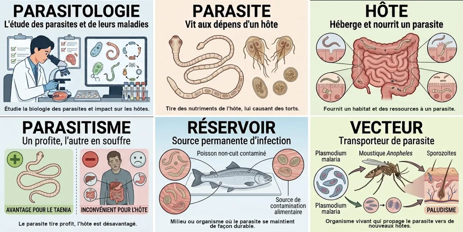
Les six termes du vocabulaire du parasitisme
| Terme | Définition | Exemple |
|---|---|---|
| Parasitologie | Science qui étudie les parasites et les maladies qu’ils causent. | Un laboratoire qui identifie un ver dans un échantillon de poisson. |
| Parasite | Organisme qui vit aux dépens d’un autre organisme, son hôte. | Un ténia qui absorbe les nutriments de l’intestin. |
| Hôte | Organisme qui héberge et nourrit un parasite. | La personne qui a mangé de la viande contaminée. |
| Parasitisme | Relation où un organisme profite d’un autre, qui en est désavantagé. | Le parasite tire profit ; l’hôte est désavantagé. |
| Réservoir | Milieu ou organisme où un parasite vit et se maintient en permanence, d’où il peut contaminer d’autres hôtes. | Un poisson contaminé ; l’eau ou le sol pour certains protozoaires. |
| Vecteur | Organisme vivant qui transporte un parasite d’un hôte à un autre. | Le moustique Anopheles, qui transmet Plasmodium (paludisme). |
1.2 Hôte, réservoir, vecteur : ne pas confondre
Un même animal peut jouer plusieurs rôles : un poisson qui héberge un ver est son hôte; s’il est aussi la source permanente d’où le ver peut contaminer d’autres personnes, il est également un réservoir. Pour trancher, il faut regarder le rôle recherché par la question :
- Hôte : celui qui héberge et nourrit le parasite (et qui en subit les effets).
- Réservoir : la source où le parasite se maintient durablement (un animal, mais aussi l’eau ou le sol).
- Vecteur : un organisme vivant qui transporte le parasite d’un hôte à un autre (moustique, tique, mouche). Un aliment, lui, n’est pas un vecteur au sens strict : on dit qu’il est un véhicule.
Activité 6.1 — Parasitisme et groupes d’organismes : vocabulaire et tri des groupes (voir le bouton d’activité en haut de la page).
PARTIE 2 — La diversité des parasites
Plusieurs groupes d’organismes que l’on connaît déjà (bactéries au Cours 4, mycètes au Cours 5) contiennent des espèces qui profitent de leur hôte. Le Cours 6 ajoute les virus, les protozoaires, les helminthes (vers parasites) et les arthropodes parasites.
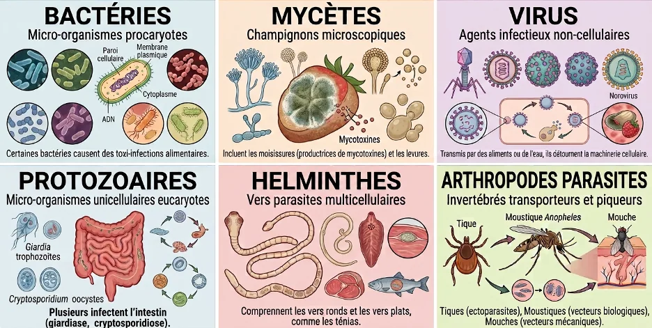
Les six groupes d’organismes et leur lien avec les aliments
| Groupe | Nature | Taille approx. | Exemples | Lien avec les aliments |
|---|---|---|---|---|
| Bactéries | Procaryotes unicellulaires | ~ µm | Salmonella, Listeria, E. coli | Certaines causent des toxi-infections alimentaires. |
| Mycètes | Eucaryotes : levures (unicellulaires) et moisissures (filamenteuses) | ~ µm | Penicillium, Aspergillus, Saccharomyces | Les moisissures altèrent les aliments et produisent des mycotoxines. Les levures servent à fermenter. |
| Virus | Agents infectieux non cellulaires, parasites intracellulaires obligatoires | < µm | Norovirus, virus de l’hépatite A | Transmis par les aliments ou l’eau (huîtres, fruits rouges). Ils détournent la machinerie de la cellule hôte. |
| Protozoaires | Eucaryotes unicellulaires | ~ µm | Giardia, Cryptosporidium | Plusieurs infectent l’intestin. |
| Helminthes | Vers parasites multicellulaires : vers ronds et vers plats | mm → m | Anisakis, Trichinella, ténias | Transmis par la viande, le poisson ou les végétaux contaminés. |
| Arthropodes parasites | Invertébrés | mm → cm | Tiques, moustiques, mouches | Mouches : vecteurs mécaniques qui contaminent les aliments. |
Le tableau de synthèse à la fin de ce document compare les trois groupes détaillés dans ce cours (virus, vers parasites, protozoaires).
PARTIE 3 — Les virus
3.1 Où sont les virus ?
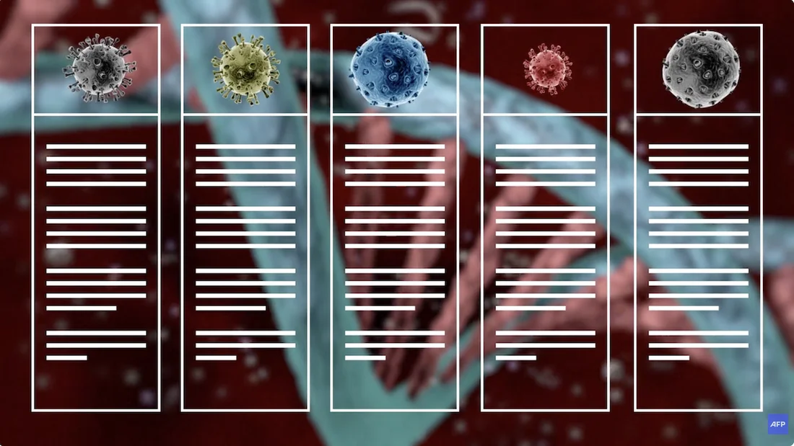
Quand on observe l’arbre de vie (le système à trois domaines vu aux Cours 1 et 5), une chose frappe : les virus n’y figurent pas. Archées, Bactéries et Eucaryotes (protistes, plantes, animaux, champignons) sont tous formés de cellules. Un virus n’est pas une cellule : il n’a donc pas sa place sur l’arbre du vivant.
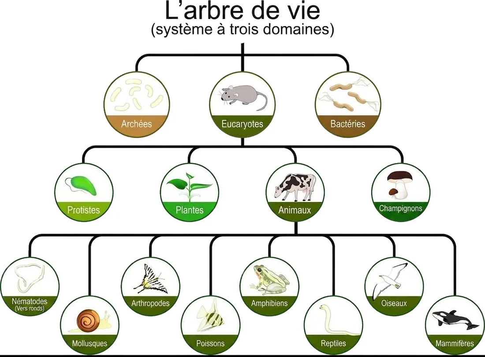
L’arbre de vie (système à trois domaines) : où sont les virus ?
3.2 Caractéristiques des virus
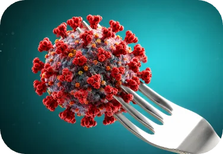
Le virus peut voyager avec les aliments : l’aliment est son véhicule
- N’est pas une cellule : c’est un agent infectieux non cellulaire.
- Inerte hors d’un hôte : en dehors d’une cellule hôte, il ne fait rien (ni métabolisme, ni croissance).
- Très petit : 20 à 300 nm, donc invisible au microscope optique.
- Parasite obligatoire : il ne peut se reproduire qu’à l’intérieur d’une cellule vivante.
- Détourne la machinerie de l’hôte (ribosomes, organites) pour fabriquer ses copies.
- Ne se multiplie pas dans les aliments : l’aliment sert uniquement de véhicule.
À retenir. Dans un aliment laissé sur le comptoir, les bactéries peuvent se multiplier, mais les virus non : ils attendent d’être avalés pour infecter des cellules. C’est pourquoi la quantité de virus dans un aliment ne peut jamais augmenter pendant l’entreposage.
Complément. Un virus (appelé virion hors de la cellule) est formé de matériel génétique (ADN ou ARN) protégé par une capside de protéines; certains possèdent en plus une enveloppe lipidique. Il existe des virus qui infectent les animaux (dont l’humain), les plantes et même les bactéries : ces derniers s’appellent des bactériophages. La différence capside seule / avec enveloppe compte en alimentation : les virus d’origine alimentaire courants (norovirus, virus de l’hépatite A) sont non enveloppés, ce qui contribue à leur robustesse.
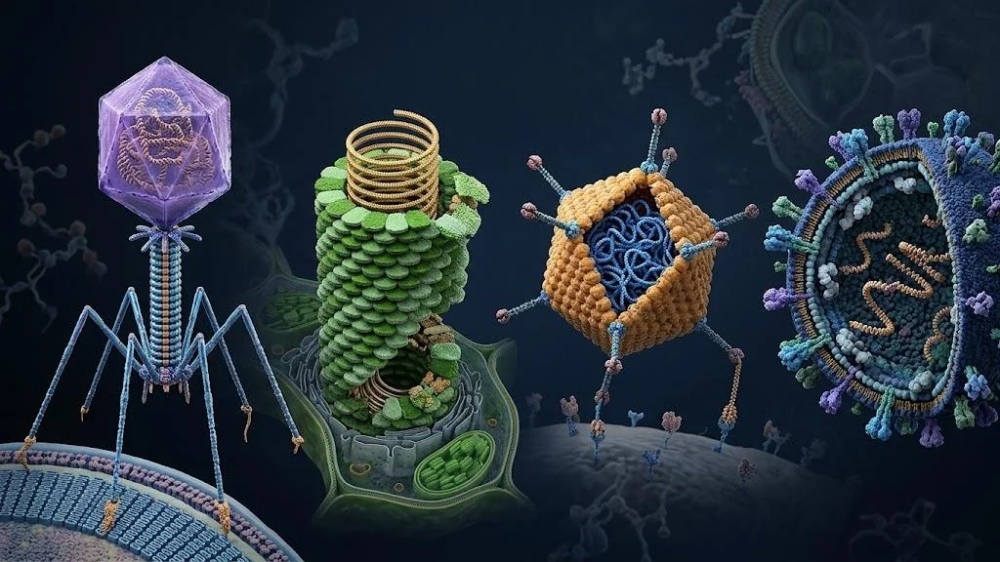
Des virus de formes variées : bactériophage, virus de plante, virus à capside et virus enveloppé (illustration)
3.3 La taille des virus
À gauche ci-dessous, un bactériophage (petit point) accroché à une bactérie, observé en microscopie électronique; à droite, une comparaison de tailles : la bactérie mesure environ 2 µm, le virus environ 100 nm. Il en faudrait donc une vingtaine, bout à bout, pour traverser la bactérie.
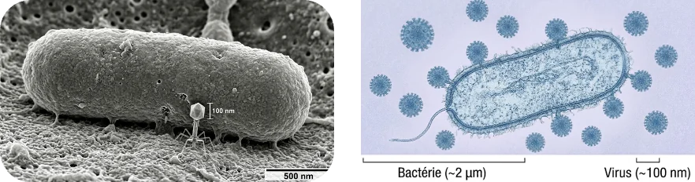
Bactériophage (microscopie électronique) et comparaison de taille : bactérie (~2 µm) et virus (~100 nm)
3.4 Comment un virus alimentaire (non enveloppé) tue une cellule
Le cycle d’un virus qui détruit sa cellule hôte se déroule en quatre temps :
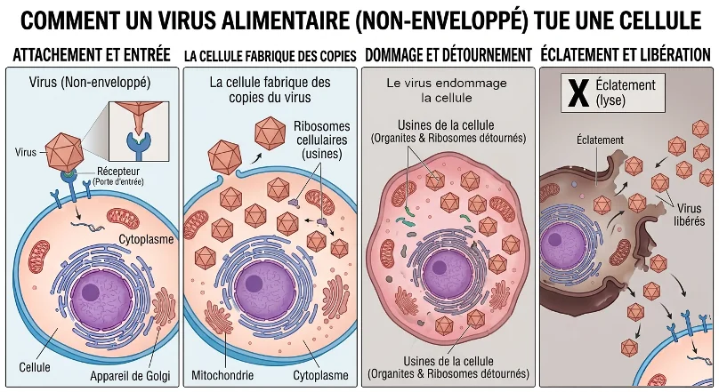
Comment un virus alimentaire (non enveloppé) tue une cellule
| Étape | Ce qui se passe |
|---|---|
| 1. Attachement et entrée | Le virus reconnaît un récepteur précis à la surface de la cellule (une « porte d’entrée »), s’y fixe et libère son matériel génétique dans la cellule. |
| 2. La cellule fabrique des copies | Les ribosomes de la cellule, dirigés par le matériel génétique du virus, servent d’« usines » pour fabriquer les copies du virus. |
| 3. Dommage et détournement | Les organites et les ribosomes sont détournés au profit du virus; la cellule, remplie de nouveaux virus, est de plus en plus endommagée. |
| 4. Éclatement et libération | La membrane cède (lyse), la cellule meurt et les nouveaux virus sont libérés : ils sont prêts à infecter d’autres cellules. |
Complément. La littérature décrit ces étapes de façon un peu plus détaillée (fixation, pénétration, décapsidation, synthèse des acides nucléiques et des protéines virales, assemblage, libération). Les quatre temps ci-dessus en sont la version simplifiée du cours.
Activité 6.2 — Les virus, de la cellule à l’assiette : cycle viral, vrai ou faux et six enquêtes d’éclosion.
3.5 Les virus : les risques en alimentation
Les deux virus d’origine alimentaire les plus importants sont le norovirus (gastro-entérite : vomissements, diarrhée) et le virus de l’hépatite A (atteinte du foie). Quatre idées résument pourquoi ils sont si difficiles à maîtriser.
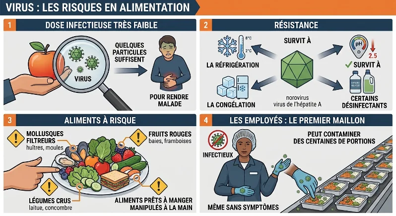
Virus : les risques en alimentation
| Idée | Ce qu’il faut retenir | Conséquence pratique |
|---|---|---|
| 1. Dose infectieuse très faible | Quelques particules suffisent pour rendre une personne malade. | Une contamination invisible et minuscule peut suffire; l’absence de « beaucoup de virus » ne rassure pas. |
| 2. Résistance | Le norovirus et le virus de l’hépatite A survivent à la réfrigération, à la congélation, à l’acidité (pH de 2,5) et à certains désinfectants. | Le froid et l’acidité ne remplacent pas la prévention à la source; il faut employer un désinfectant dont l’efficacité sur ces virus est démontrée. |
| 3. Aliments à risque | Mollusques filtreurs (huîtres, moules), fruits rouges (baies, framboises), légumes crus (laitue, concombre), aliments prêts à manger manipulés à la main (sandwichs, salades). | Ce sont des aliments consommés crus ou sans cuisson finale : rien ne détruit le virus avant la bouche. |
| 4. Les employés : le premier maillon | Un employé infectieux, même sans symptômes, peut contaminer des centaines de portions. | Hygiène des mains, exclusion du travail en cas de symptômes et après la guérison, gants changés régulièrement. |
Complément. Les mollusques filtreurs concentrent les virus parce qu’ils filtrent de grandes quantités d’eau : si l’eau est contaminée par des matières fécales, les huîtres et les moules en accumulent. Comme la quantité de virus dans un aliment est très faible, on les détecte difficilement au microscope; on utilise plutôt des méthodes moléculaires (PCR) ou immunologiques (ELISA), qui seront reprises au Cours 8.
À retenir sur les virus. Pas une cellule, inerte hors d’un hôte, très petit (20 à 300 nm), parasite obligatoire; ne se multiplie pas dans les aliments, qui ne sont que son véhicule; dose infectieuse très faible; résiste au froid, à l’acidité et à certains désinfectants; les employés sont le premier maillon.
PARTIE 4 — Les vers parasites
4.1 Caractéristiques des vers parasites
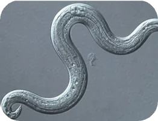
Un ver rond (nématode)
- Animaux : ce sont des organismes multicellulaires (on les repère sur l’arbre de vie, parmi les animaux : nématodes, ou vers ronds).
- Pluricellulaires invertébrés : pas de squelette interne.
- Visibles à l’œil nu (au stade adulte) — mais leurs larves et leurs kystes dans les aliments sont souvent invisibles.
- Ne se multiplient pas dans les aliments.
- Ils y sont présents sous forme de larve ou de kyste.
- L’aliment est le véhicule, et l’animal contaminé est le réservoir.
Le terme helminthes désigne l’ensemble des vers parasites. On distingue deux grands types : les vers ronds (nématodes) et les vers plats (cestodes, comme les ténias, et trématodes, comme les douves).
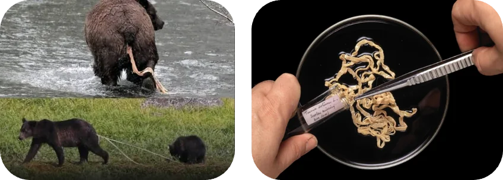
Les animaux sont les hôtes et les réservoirs des vers (à gauche : un ours qui se nourrit de poisson); à droite, un ver plat adulte, qui peut mesurer plusieurs mètres
4.2 Les principaux vers parasites d’origine alimentaire
| Maladie | Parasite | Type de ver | Aliment en cause | Atteinte |
|---|---|---|---|---|
| Anisakiase | Anisakis | Ver rond (nématode) | Poisson (sushi, sashimi, ceviche, poisson mariné) | Crampes digestives, réaction allergique |
| Trichinellose | Trichinella | Ver rond (nématode) | Porc, viande rouge (gibier) | Douleurs musculaires, fièvre (kystes dans les muscles) |
| Téniasis | Ténias (Taenia) | Ver plat (cestode) | Bœuf, porc (tartare, viande peu cuite) | Ver adulte dans l’intestin |
| Diphyllobothriose | Diphyllobothrium | Ver plat (cestode) | Poisson d’eau douce cru ou peu cuit | Carence en vitamine B12, anémie |
| Fasciolose | Fasciola | Ver plat (trématode, douve du foie) | Végétaux (cresson sauvage, plantes aquatiques) | Obstruction des voies biliaires, atteinte du foie |
4.3 Les risques en alimentation : vers parasites et contamination
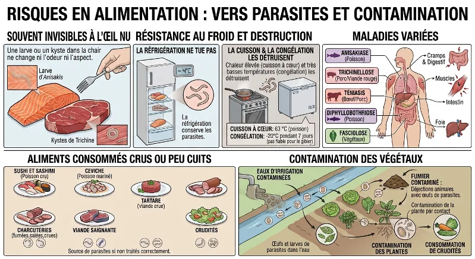
Risques en alimentation : vers parasites et contamination
- Souvent invisibles à l’œil nu : une larve (ex. Anisakis dans le poisson) ou un kyste (ex. Trichinella dans la viande) ne change ni l’odeur ni l’aspect de l’aliment. Sentir ou regarder l’aliment ne permet pas de le juger.
- La réfrigération ne tue pas les parasites : elle les conserve.
- La cuisson et la congélation les détruisent : une chaleur élevée (cuisson à cœur : 63 °C pour le poisson) ou de très basses températures (congélation : −20 °C pendant 7 jours, pas fiable pour le gibier) les détruisent.
- Aliments consommés crus ou peu cuits : sushi et sashimi (poisson cru), ceviche (poisson mariné), tartare (viande crue), charcuteries (fumées, salées, crues), viande saignante, crudités. Ce sont des sources de parasites si non traités correctement.
- Contamination des végétaux : par les eaux d’irrigation contaminées (œufs et larves de parasites dans l’eau) et par le fumier contaminé (déjections animales avec œufs de parasites). La contamination se fait par contact avec la plante, puis par consommation de crudités.
Complément — valeurs à valider. Les valeurs « 63 °C pour le poisson » et « −20 °C pendant 7 jours » sont celles de la diapositive. Les recommandations officielles varient selon l’organisme et le produit : par exemple, Santé Canada recommande de cuire le poisson à une température interne de 70 °C, et d’autres exigences existent pour la viande hachée et le porc (71 °C). On valide toujours la valeur avec la norme enseignée (MAPAQ, ACIA) avant de l’utiliser en examen ou en production.
4.4 Les mécanismes de dommages causés par les vers parasites
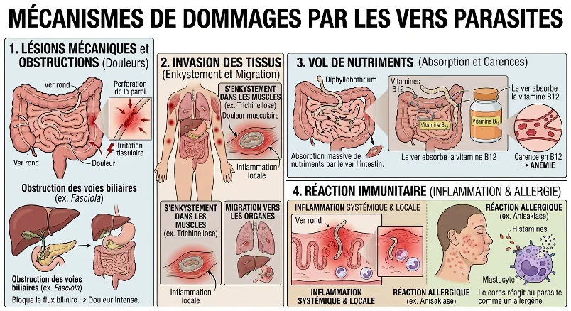
Mécanismes de dommages par les vers parasites
| Mécanisme | Ce qui se passe | Exemple |
|---|---|---|
| 1. Lésions mécaniques et obstructions (douleurs) | Un ver perfore la paroi de l’intestin, irrite les tissus ou bloque un conduit. | Ver rond (perforation, irritation); Fasciola : obstruction des voies biliaires, douleur intense. |
| 2. Invasion des tissus (enkystement et migration) | Les larves quittent l’intestin, s’enkystent dans les muscles ou migrent vers d’autres organes (inflammation locale). | Trichinella : enkystement dans les muscles, douleur musculaire. |
| 3. Vol de nutriments (absorption et carences) | Le ver absorbe massivement des nutriments au détriment de l’hôte. | Diphyllobothrium : absorbe la vitamine B12, d’où une carence puis une anémie. |
| 4. Réaction immunitaire (inflammation et allergie) | Le corps réagit à la présence du ver : inflammation systémique et locale, ou réaction allergique (mastocytes, histamine). | Anisakis : réaction allergique (éruption cutanée, démangeaisons). |
4.5 Prévention
Puisque le ver ne se multiplie pas dans l’aliment et qu’il y est souvent invisible, la prévention repose sur trois moyens : cuire à cœur les poissons et les viandes; congeler adéquatement le poisson destiné à être consommé cru (la congélation n’est pas fiable pour le gibier); et laver les végétaux, tout en évitant de les arroser avec une eau ou un fumier non traités. La réfrigération ne détruit pas les parasites : elle ne constitue pas une mesure de prévention contre eux.
Activité 6.3 — Les vers parasites, de l’assiette à l’organisme : mécanismes de dommage, enquêtes et mesures de prévention.
À retenir sur les vers parasites. Animaux pluricellulaires, visibles à l’œil nu à l’état adulte; ne se multiplient pas dans l’aliment, où ils sont présents sous forme de larve ou de kyste (souvent invisibles); l’aliment est le véhicule et l’animal contaminé est le réservoir; la cuisson et la congélation les détruisent, la réfrigération non; quatre mécanismes de dommage.
PARTIE 5 — Les protozoaires
5.1 Caractéristiques des protozoaires
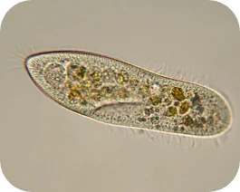
Une paramécie (protozoaire cilié libre)
- Parasites (pour la plupart des espèces qui nous intéressent en alimentation) : ils vivent aux dépens d’un hôte.
- Unicellulaires : eucaryotes formés d’une seule cellule, avec un vrai noyau.
- 5 à 100 µm : plus gros qu’une bactérie, visibles au microscope optique.
- Ne se multiplient pas dans les aliments.
- Présents sous forme de kystes ou d’œufs (oocystes), formes résistantes. (Les « larves » appartiennent aux vers : chez les protozoaires, la forme de résistance est le kyste ou l’oocyste.)
- L’aliment est le véhicule. Le réservoir est un animal contaminé ou un milieu (eau, sol).
Parmi les groupes d’eucaryotes de l’arbre de vie, les protozoaires font partie des protistes.
5.2 Quelques protozoaires en images
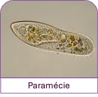
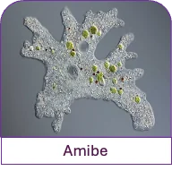
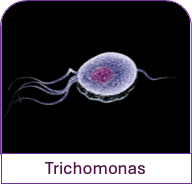
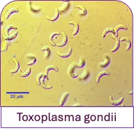
En haut : paramécie et amibe; en bas : Trichomonas et Toxoplasma gondii
| Organisme | Type de déplacement | Lien avec les aliments |
|---|---|---|
| Paramécie | Cils (cilié) | Espèce libre de l’eau douce; ne cause pas de maladie alimentaire. Sert de modèle pour observer un protozoaire. |
| Amibe | Pseudopodes (« faux pieds ») | Plusieurs amibes vivent librement; Entamoeba histolytica cause l’amibiase, transmise par l’eau et les aliments contaminés. |
| Trichomonas | Flagelles | Trichomonas vaginalis est transmis par contact sexuel : ce n’est pas un parasite d’origine alimentaire. Il illustre ici la forme d’un protozoaire flagellé. |
| Toxoplasma gondii | Pas d’appendice locomoteur (mouvement par glissement) | Parasite d’origine alimentaire important (viande peu cuite, légumes et eau contaminés par des excréments de chat). |
5.3 Les principaux protozoaires d’origine alimentaire
| Protozoaire | Maladie | Forme de résistance | Aliments et sources habituels |
|---|---|---|---|
| Giardia (G. intestinalis) | Giardiase (diarrhée, crampes) | Kyste | Eau contaminée, légumes et fruits crus lavés avec de l’eau contaminée |
| Cryptosporidium | Cryptosporidiose (diarrhée aqueuse) | Oocyste (très résistant, notamment au chlore) | Eau, lait ou jus non pasteurisés, légumes crus |
| Cyclospora cayetanensis | Cyclosporose (diarrhée prolongée) | Oocyste | Petits fruits (framboises), herbes et légumes frais |
| Entamoeba histolytica | Amibiase (dysenterie amibienne) | Kyste | Eau et aliments contaminés par des matières fécales |
| Toxoplasma gondii | Toxoplasmose | Oocyste (excréments de chat) et kyste tissulaire (viande) | Viande peu cuite (porc, agneau, bœuf), légumes crus non lavés, eau |
Complément. Ces espèces infectent surtout l’intestin (diarrhées, crampes, nausées). Les kystes et les oocystes survivent longtemps dans l’eau et le sol et ne se multiplient pas dans l’aliment : c’est l’eau, le sol et les animaux qui sont les réservoirs. Les kystes sont détruits par une cuisson à cœur, mais plusieurs résistent à la réfrigération et, pour les oocystes de Cryptosporidium, aux concentrations de chlore utilisées pour l’eau potable.
5.4 La toxoplasmose
La toxoplasmose est causée par Toxoplasma gondii. Le chat est l’hôte où le parasite se reproduit et d’où il est rejeté dans ses excréments sous forme d’oocystes qui contaminent le sol, l’eau et les végétaux. D’autres animaux (porc, agneau, bœuf) s’infectent et hébergent des kystes dans leurs muscles; l’humain s’infecte en mangeant de la viande peu cuite ou des légumes crus mal lavés, ou en manipulant la litière d’un chat. Chez la plupart des adultes en santé, l’infection passe inaperçue, mais elle est dangereuse pendant la grossesse (atteinte possible du fœtus) et chez les personnes dont le système immunitaire est affaibli.
Pour les aliments, les mesures de base sont : cuire à cœur les viandes, laver les fruits et légumes crus, se laver les mains après avoir touché de la viande crue, de la terre ou de la litière, et éviter l’eau et le lait non traités.
À retenir sur les protozoaires. Eucaryotes unicellulaires de 5 à 100 µm; ne se multiplient pas dans les aliments; présents sous forme de kystes ou d’oocystes résistants; l’aliment est le véhicule; le réservoir est un animal contaminé ou un milieu (eau, sol).
PARTIE 6 — Les arthropodes parasites
Les arthropodes sont des invertébrés dont la taille va de quelques millimètres à quelques centimètres (tiques, moustiques, mouches). Ils sont peu souvent des « parasites alimentaires » au sens strict; ils intéressent surtout le domaine alimentaire à titre de vecteurs.
| Arthropode | Rôle | Exemple |
|---|---|---|
| Mouche | Vecteur mécanique : se pose sur des déchets ou des excréments puis sur un aliment qu’elle contamine, sans que le microorganisme se développe en elle. | Contamination d’aliments exposés (cuisine, marché, aire de service). |
| Moustique | Vecteur biologique : le parasite se développe dans l’insecte avant d’être transmis à un nouvel hôte. | Plasmodium (paludisme) transmis par le moustique Anopheles. |
| Tique | Ectoparasite (vit sur la peau de son hôte et se nourrit de son sang) et vecteur. | Peut transmettre des agents infectieux d’un animal à un autre, ou à l’humain. |
En cuisine et en usine alimentaire, la lutte contre les mouches (écrans, hygiène, gestion des déchets) est une mesure de prévention de la contamination.
Tableau de synthèse : virus, vers parasites et protozoaires
| Virus | Vers parasites (helminthes) | Protozoaires | |
|---|---|---|---|
| Nature | Agent infectieux non cellulaire, parasite intracellulaire obligatoire | Animaux pluricellulaires invertébrés (vers ronds et vers plats) | Eucaryotes unicellulaires (protistes) |
| Taille | 20 à 300 nm (invisible au microscope optique) | mm → m (visibles à l’œil nu, adultes) | 5 à 100 µm (microscope) |
| Se multiplie dans l’aliment ? | Non | Non | Non |
| Forme présente dans l’aliment | Particules virales (virions) | Larve ou kyste | Kyste ou oocyste (résistant) |
| Rôle de l’aliment | Véhicule | Véhicule | Véhicule |
| Réservoir | L’humain (infectieux, même sans symptômes), l’eau | Un animal contaminé | Un animal contaminé ou un milieu (eau, sol) |
| Exemples | Norovirus, virus de l’hépatite A | Anisakis, Trichinella, ténias, Diphyllobothrium, Fasciola | Giardia, Cryptosporidium, Cyclospora, Toxoplasma |
| Moyens de maîtrise | Hygiène des employés, exclusion des personnes malades, choix de l’eau et des sources (mollusques, fruits rouges) | Cuisson à cœur, congélation (poisson cru), lavage des végétaux | Eau potable traitée, lavage des légumes et fruits, cuisson à cœur, hygiène des mains |
Vocabulaire clé
Parasitologie, parasite, hôte, parasitisme, réservoir, vecteur, véhicule, helminthe, arthropode, ectoparasite, virus, virion, capside, enveloppe, bactériophage, parasite intracellulaire obligatoire, récepteur, lyse, nanomètre (nm), norovirus, virus de l’hépatite A, dose infectieuse, mollusque filtreur, ver rond (nématode), ver plat (cestode, trématode), larve, kyste, Anisakis, Trichinella, ténia, Diphyllobothrium, Fasciola, anisakiase, trichinellose, téniasis, diphyllobothriose, fasciolose, cuisson à cœur, congélation, protozoaire, protiste, oocyste, Giardia, Cryptosporidium, Cyclospora, Entamoeba, Toxoplasma gondii, toxoplasmose, vecteur mécanique, vecteur biologique.
Fin des notes de cours — Cours 6.